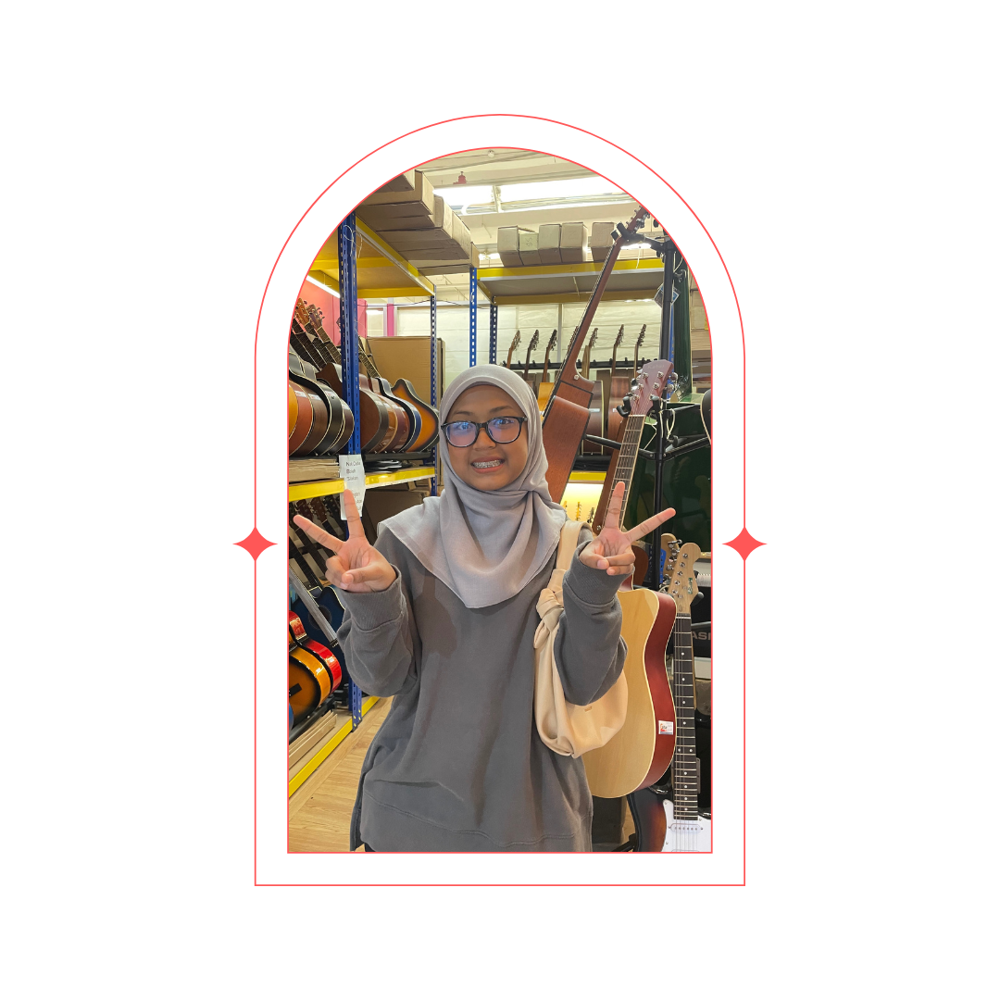
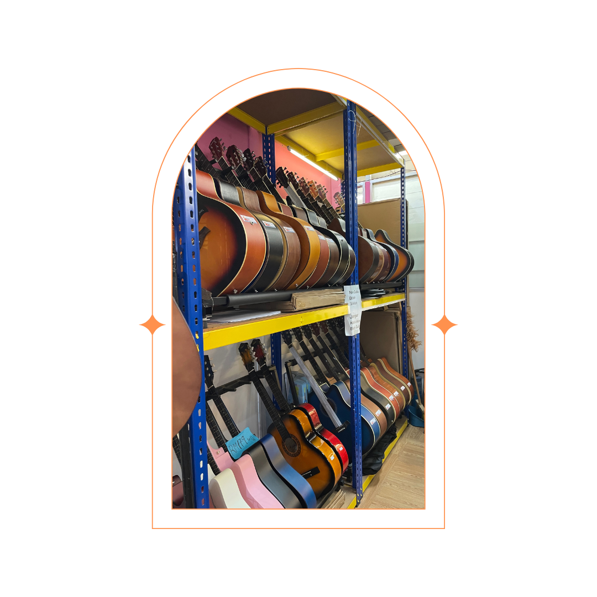
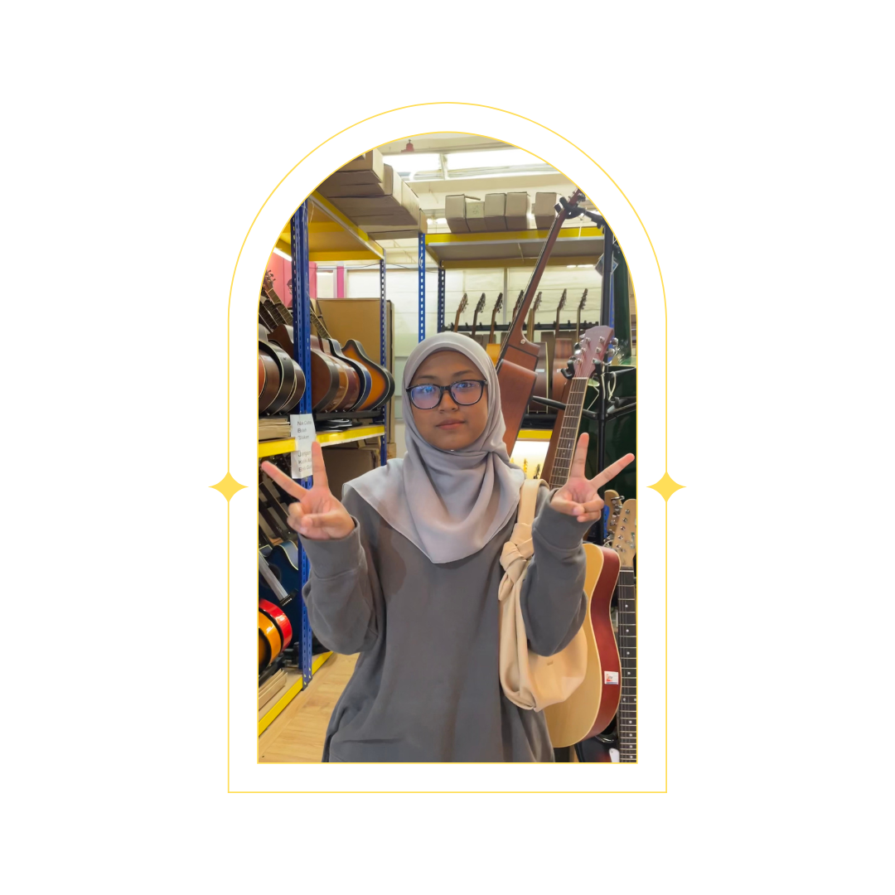
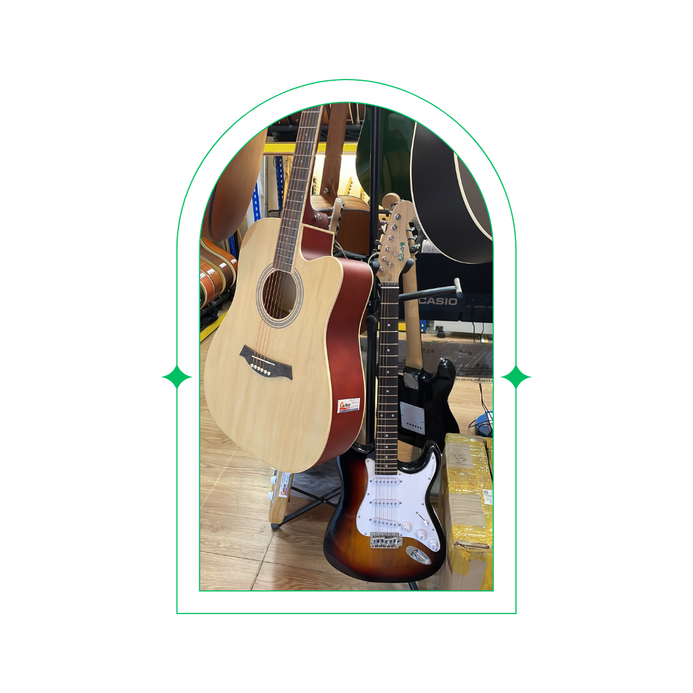
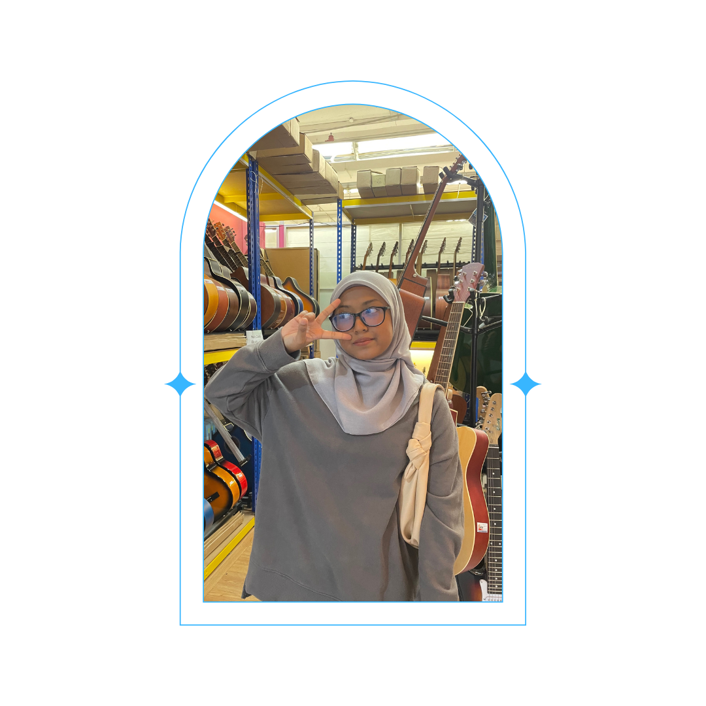

I received my first guitar ever from
my mother as my 19th birthday present.
I got so happy.

I have been wanting to buy it since I was 17,
but my mother chose to treat me,
and I am more than grateful for her.

I always find comfort in playing guitar.
It helps me let my bad thoughts away every time I start strumming the chords.

I spend at least 3 hours a day to learn
and practice so that I will not forget
about the chords and finger placement.

I hope everyone will find their own comfort,
and for me, it is by playing guitar. Thank you for existing, dear guitar.